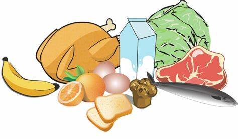
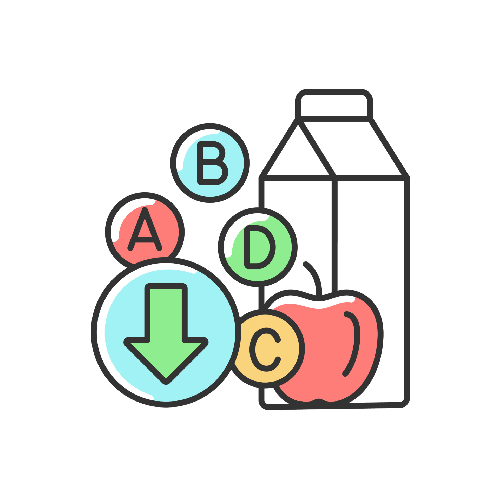

ㅤ
Dietas Saludables
ㅤ
Nutricion
La nutrición balanceada juega un papel muy importante en nuestra salud, esto implica consumir una variedad de alimentos en las proporciones adecuadas para proporcionar al cuerpo todos los nutrientes esenciales que necesita para funcionar correctamente. Lo que se pretende es mantener un peso saludable, fortalecer el sistema inmunológico, promover un crecimiento y desarrollo adecuado, y reducir el riesgo de enfermedades crónicas en nuestros jóvenes. Para ello debemos conocer conceptos claves como:
Macronutrientes:

Carbohidratos: Fuente principal de energía. Se encuentran en granos, frutas, verduras y legumbres son fuentes recomendables.
Proteínas: Necesarias para el crecimiento y reparación de tejidos. Se encuentran en carnes, pescado, huevos, legumbres y productos lácteos
Grasas: Importantes para la absorción de vitaminas y la producción de hormonas. Las fuentes saludables incluyen aguacates, frutos secos y aceite de oliva.
Micronutrientes:

Vitaminas: Ayudan a las funciones corporales específicas. Ejemplos incluyen la vitamina C (en frutas cítricas) y la vitamina D (en pescados grasos y exposición al sol).
Minerales: Como el hierro, calcio y zinc, son cruciales para diversas funciones corporales. Se encuentran en alimentos como carnes, lácteos y vegetales de hojas verdes.
Fibra: Crucial para la salud digestiva y la regulación del azúcar en sangre. Alimentos ricos en fibra incluyen vegetales, frutas, legumbres y granos integrales.
Hidratación:
El agua es esencial para todas las funciones corporales. Ayuda a la digestión, absorción de nutrientes y regulación de la temperatura corporal. La recomendación general es consumir aproximadamente 8 vasos (2 litros) de agua al día, pero esto puede variar según el clima, nivel de actividad y necesidades individuales. Además del agua, otros líquidos como infusiones y té sin azúcar contribuyen a la ingesta diaria de líquidos. Los alimentos con alto contenido de agua, como frutas y verduras (por ejemplo, sandía, pepino), también ayudan a mantener la hidratación. La hidratación adecuada es fundamental para el bienestar general y el funcionamiento óptimo del cuerpo.
Para una alimentación equilibrada, puedes guiarte por el modelo del Plato Saludable de Harvard, que sugiere lo siguiente :
El Plato de la Alimentación Saludable de Harvard es una guía visual desarrollada por expertos en nutrición de la Escuela de Salud Pública de Harvard. Se diseñó para ayudar a las personas a construir comidas equilibradas y nutritivas. Esta herramienta divide el plato en secciones, cada una representando un grupo de alimentos clave:
Verduras y Frutas (50% del plato):Estas deben ocupar la mitad del plato, con énfasis en la variedad y el color. Se recomienda consumir más verduras que frutas y evitar las papas debido a su impacto en el azúcar en sangre.
Granos Integrales (25% del plato): Un cuarto del plato debe incluir granos integrales como el arroz integral, la avena, el pan integral y la quinua. Se aconseja evitar los granos refinados como el pan blanco y el arroz blanco.
Proteínas Saludables (25% del plato): Esta sección incluye fuentes de proteínas como legumbres, nueces, pescado, aves y tofu. Se sugiere limitar las carnes rojas y evitar las carnes procesadas.
Aceites Saludables : Se recomienda el uso de aceites saludables, como el de oliva y canola, para cocinar y sazonar los alimentos, y evitar las grasas trans y aceites parcialmente hidrogenados.
Agua y Bebidas Saludables : Como bebida principal, se promueve el consumo de agua, además de té y café con poca o sin azúcar. Se recomienda limitar el consumo de lácteos a una o dos porciones diarias y evitar bebidas azucaradas.
El Plato Saludable también sugiere mantenerse activo activamente, resaltando que la dieta es solo un componente de un estilo de vida saludable. Para más detalles, visita la página oficial de la Guía del Plato Saludable de Harvard.
ㅤ

ㅤ
ㅤ
Concejos practicos:

-Planificación de menùs: Preparar un menú semanal te ayuda a comprar solo los ingredientes necesarios y evita la tentación de consumir opciones menos saludables.
-Leer Etiquetas:Comprender la información nutricional permite hacer elecciones informadas, especialmente respecto al contenido de azúcar, grasas y sodio.
-Cocina en Casa: Preparar tus comidas en casa te da control sobre los ingredientes y las porciones.
-Sin distracciones: Come sin distracciones como la televisión o el teléfono para estar más consciente de lo que estás comiendo y disfrutar más la comida.
-Masticar Bien: Tómate tu tiempo para masticar bien los alimentos, lo cual facilita la digestión y te ayuda a sentirte satisfecho con menos comida.
-Actualización: Mantente informado sobre las recomendaciones nutricionales actuales y las investigaciones en nutrición.
-Consulta Profesional: Si tienes necesidades dietéticas especiales o problemas de salud, considera consultar a un dietista o nutricionista.
ㅤ
Superando Desafíos Comunes para Mantener una Dieta Saludable:
-Falta de Tiempo :Prepare comidas con anticipación y opte por recetas rápidas que faciliten comer saludablemente sin invertir mucho tiempo diario en la cocina.
-Costo :Comprar productos de temporada y en mercados locales puede reducir el costo de alimentos saludables. Las legumbres y granos integrales también son opciones económicas y nutritivas.
-Acceso a Opciones Saludables :Cuando no hay acceso a alimentos frescos, aprovecha opciones de entrega a domicilio y busca alimentos integrales en tiendas online. Además, congelar frutas y verduras es una buena alternativa para tener opciones nutritivas siempre disponibles.
ㅤ
Artículos y Estudios Científicos
Para aquellos interesados en profundizar, estos artículos ofrecen información científica sobre cómo la dieta impacta la salud:
Dietary guidelines for americans: Las Guías dietéticas para estadounidenses (Dietary guidelines for americans) ofrecen recomendaciones basadas en investigaciones para promover una alimentación saludable. Esta guía, publicada por el Departamento de Agricultura de los Estados Unidos (USDA) y el Departamento de Salud y Servicios Humanos (HHS), se actualiza cada cinco años. Proporciona orientación sobre patrones de alimentación que promueven la salud y previenen enfermedades, basándose en la evidencia científica más reciente. La guía aborda temas como la reducción de azúcares añadidos y grasas saturadas, y la importancia de una dieta rica en frutas, verduras, granos integrales y proteínas magras. ¡Si quieres visitarlos ingresa a este link! Dietary guidelines.
ㅤ
The Nutrition Source-La fuente de nutrición: The Nutrition Source , de la Escuela de Salud Pública de Harvard, es un recurso educativo que brinda información precisa y actualizada sobre nutrición y salud. Este sitio explora temas como el control del peso, el impacto de los nutrientes específicos en la salud, y la relación entre dieta y enfermedades crónicas. También ofrece una guía visual, el Plato Saludable , que facilita la creación de una dieta equilibrada y adaptable a las necesidades individuales. Es ideal para quienes buscan información respaldada científicamente para tomar decisiones informadas sobre su alimentación. ¡Si quieres visitarlos ingresa a este link! Nutricion source harvard.
ㅤ
Heathline-Linea de salud : Healthline ofrece una amplia variedad de artículos sobre dieta y nutrición que exploran diferentes enfoques dietéticos y sus efectos en la salud. Desde guías sobre dietas populares hasta investigaciones sobre cómo la nutrición influye en enfermedades específicas, Healthline se enfoca en brindar contenido claro y accesible basado en evidencia científica. Es un recurso excelente para entender cómo adaptar la dieta a diferentes objetivos de salud, como pérdida de peso, control de azúcar en sangre y mejora de la salud digestiva. ¡Si quieres visitarlos ingresa a este link! Healthline.
ㅤ
Recursos multimedia
El contenido multimedia ofrece una manera interactiva y accesible de aprender sobre nutrición y dietas. Aquí hay algunas recomendaciones de podcasts y videos que exploran la conexión entre la alimentación y la salud:
-Podcast :
"Nutrition Facts with Dr. Greger" : Este podcast está basado en investigaciones científicas y se centra en temas como la prevención de enfermedades mediante la dieta, la importancia de los nutrientes y los mitos sobre nutrición. Es ideal para aquellos interesados en datos científicos aplicados a la vida cotidiana. Disponible en Spotify y Apple Podcasts.
"The Doctor's Farmacy" con Dr. Mark Hyman : En este programa, el Dr. Hyman invita a expertos en salud y nutrición para discutir temas como los alimentos que optimizan el bienestar, la salud metabólica y cómo el entorno afecta nuestras elecciones alimenticias. Disponible en Spotify, Apple Podcasts y Google Podcasts.
"Eat This, Not That" : Ofrece consejos prácticos y comparaciones de alimentos para ayudar a tomar decisiones informadas al momento de elegir qué comer. Se enfoca en identificar opciones de alimentos más saludables y equilibrados. Disponible en Spotify.
"Los consejos rápidos y sucios de la diva de la nutrición" : Este podcast brinda consejos breves y fáciles de entender sobre diversos temas de nutrición. Cada episodio dura alrededor de 10 minutos, lo que lo hace perfecto para aprender algo nuevo rápidamente. Disponible en Spotify y Apple Podcasts.
ㅤ
Finalmente, una dieta saludable es aquella que puedes mantener a largo plazo, que se adapta a tus necesidades y preferencias, y que te proporciona la energía y nutrientes que necesitas. La clave no está en seguir una dieta estricta, sino en hacer elecciones informadas que promuevan un equilibrio. Con esta guía, estás listo para tomar decisiones conscientes y adoptar una alimentación que mejore tu calidad de vida.